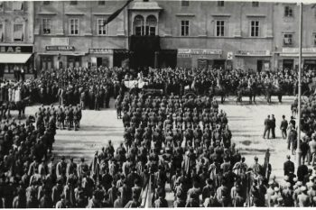
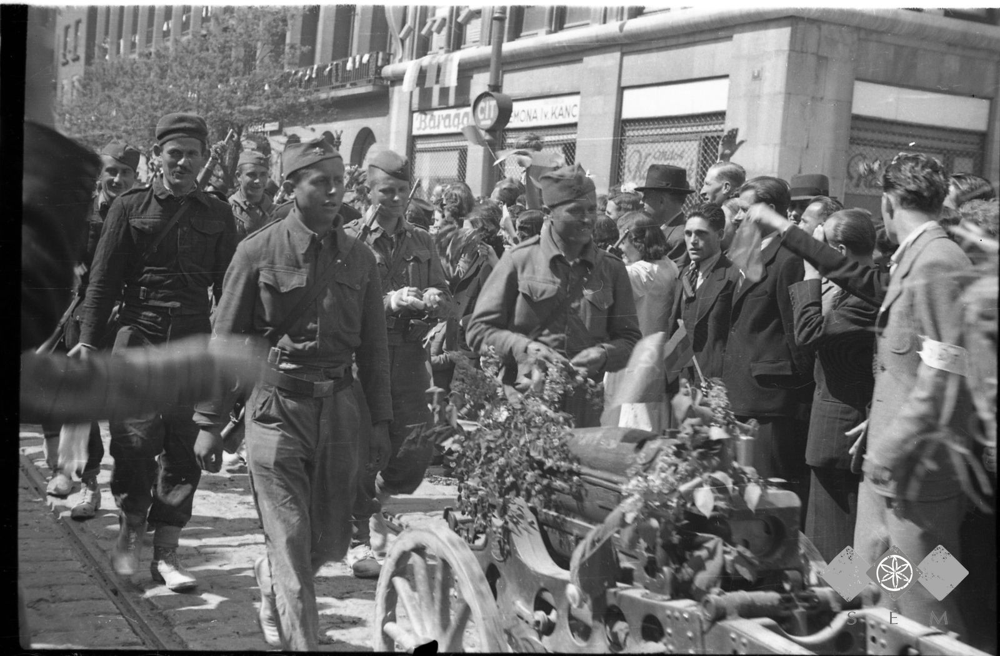
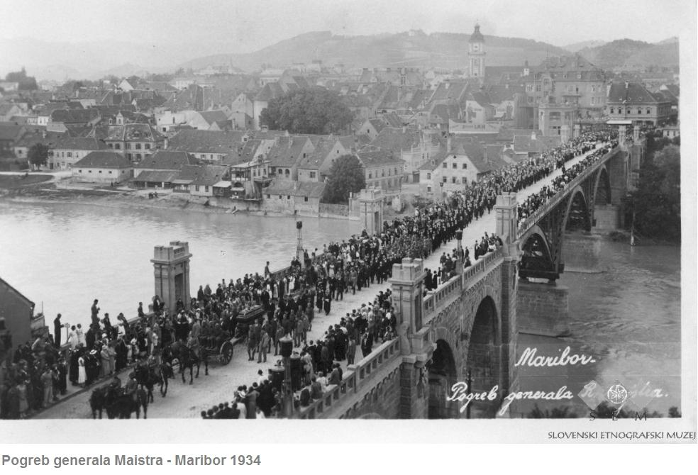
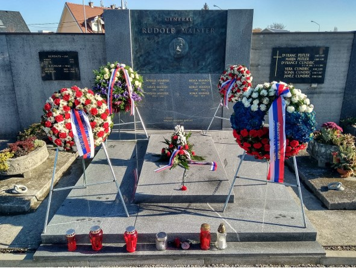

26. julija 1934 je umrl general Rudolf Maister
26. julija pred 89 leti je za posledicami kapi na Uncu pri Rakeku nenadoma umrl general Rudolf Maister.

27. julija 1934 so ga pred njegovo hišo in na poti proti Ljubljani Notranjci in prebivalci vasi in krajev ob poti množično pospremili na njegovi zadnji poti. V Ljubljani je škof Rožman opravil pogrebne svečanosti, zapeli so mu pevci, v imenu Ljubljane pa se je od generala poslovil občinski svetnik dr. Fettich.

V Mariboru so pripravili mrtvaški oder v veži mestnega magistrata, kjer se je od njega poslovilo več kot deset tisoč Mariborčanov in okoliških prebivalcev. 28. julija 1934 je pogrebni sprevod šel z Glavnega trga po Pobreški cesti do pokopališča.

Topniško lafeto s krsto, na katero je bila položena generalova kapa in njegova sablja, je počastilo več kot petindvajset tisoč Mariborčanov in okoliških prebivalcev.

To je bil največji pogreb v zgodovini Maribora.

Zveza društev generala Maistra je leta 1921 v sodelovanju z Ministrstvom za obrambo RS in Mestno občino Maribor v celoti prenovila družinsko grobnico na pobreškem pokopališču.

Dan smrti generala Rudolfa Maistra smo v DGRM Kranj tudi letos obeležili s prižiganjem sveče in položitvijo vrtnice na njegov doprsni kip na Maistrovem trgu v Kranju, Mestna občina Kranj pa je nanj položila lovorov venec.